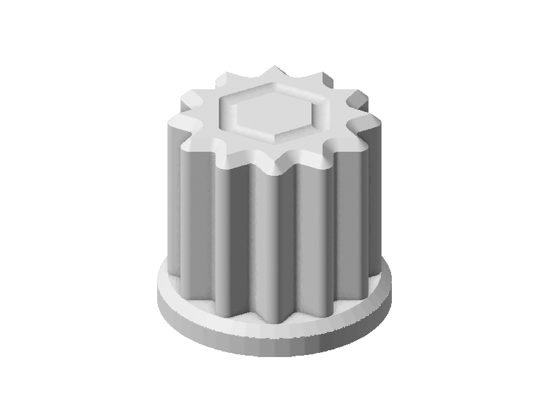
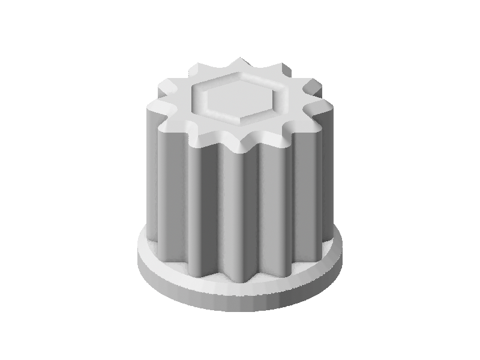

knob
Drafted with AI, not yet reviewed
sdf-native a rounded star and a tube round a hexagon; points only work out the star's radii
Knob for an EC11 rotary encoder: four turned triangles, chamfered all round, with a hexagon of grooves on top.
Ported from src/cryptodancer/knob.scad.
- The four triangles’ union is a twelve-pointed star, its inner corners at 5 sqrt(2) where neighbouring triangles’ edges cross, and their closing, offset(-1) offset(1), the star with those corners rounded.
- OpenSCAD’s minkowski with a bicone becomes a chamfered extrusion of the profile the bicone’s middle draws: the shrunk profile grown by the chamfer, whose points round by the chamfer and inner corners by half of it. Exact, where the minkowski sum is a polyhedron of 24 facets to a circle.
- The grooves are one tube round the hexagon’s outline, where the original has a cylinder for each side and a sphere at each corner, 24 facets each; the flange is faceted as the original’s 48 sides are.
- The encoder is cut from the knob, as its # leaves it.
- Compared with the original: within 0.035 mm.


Files
Source
// Knob for an EC11 rotary encoder: four turned triangles, chamfered all // round, with a hexagon of grooves on top. // // Ported from src/cryptodancer/knob.scad. // - The four triangles' union is a twelve-pointed star, its inner corners // at 5 sqrt(2) where neighbouring triangles' edges cross, and their // closing, offset(-1) offset(1), the star with those corners rounded. // - OpenSCAD's minkowski with a bicone becomes a chamfered extrusion of the // profile the bicone's middle draws: the shrunk profile grown by the // chamfer, whose points round by the chamfer and inner corners by half // of it. Exact, where the minkowski sum is a polyhedron of 24 facets to // a circle. // - The grooves are one tube round the hexagon's outline, where the // original has a cylinder for each side and a sphere at each corner, 24 // facets each; the flange is faceted as the original's 48 sides are. // - The encoder is cut from the knob, as its # leaves it. // idiom sdf-native: a rounded star and a tube round a hexagon; points only work out the star's radii import "keycap/points" as points; // --- Parameters --- const EC11_BASE_CYL_R = 3.8; const EC11_BASE_CYL_H = 7.0; const EC11_SPIN_H = 12.5; const EC11_SPIN_R = 3.25; const EC11_SPIN_CUT_H = 10.0; const EC11_SPIN_CUT_O = 1.5; const KNOB_R = 10.0; const KNOB_H = 20.0; const KNOB_CHAMFER = 1.0; const GROOVE_SIDE = 5.0; const GROOVE_R = 1.0; // --- Knob --- // The middle of the chamfered body: the triangles' star closed by the // chamfer, shrunk by half of it, then grown by all of it. let star_middle = points::miter_offset(points::star(12, [KNOB_R, KNOB_R / sqrt(2.0)]), KNOB_CHAMFER / 2); let profile = star(12, [norm(star_middle[0]), norm(star_middle[1])], #{round: [KNOB_CHAMFER, KNOB_CHAMFER / 2]}); let body = profile.extrude([0.0, KNOB_H], #{chamfer: KNOB_CHAMFER}); let flange = union( cylinder(KNOB_R + 1, [0.0, 2.0], #{sides: 48}), cone([KNOB_R + 1, KNOB_R + 0.01], [2.0, 3.0], #{sides: 48}), ); let knob = union(body, flange); // --- Cuts --- // A tube round the hexagon's outline: the distance to the outline, abs of // its field, and the height above the top, as a circle's two sides. let grooves = hypot(abs(regular_polygon(6, GROOVE_SIDE)), z - (KNOB_H + GROOVE_R / 2)) - GROOVE_R; // The encoder's shaft, its flat side cut back to EC11_SPIN_CUT_O from the // axis at the top. let spin_top = EC11_BASE_CYL_H + EC11_SPIN_H - 0.5; let ec11 = union( cylinder(EC11_BASE_CYL_R, [-0.5, EC11_BASE_CYL_H - 0.5]), cylinder(EC11_SPIN_R, [-0.5, spin_top]).difference( cuboid([EC11_SPIN_R, EC11_SPIN_R * 2, EC11_SPIN_CUT_H]) .move([EC11_SPIN_R / 2 + EC11_SPIN_CUT_O, 0, spin_top - EC11_SPIN_CUT_H / 2 + 0.01]), ), ); // --- Output --- draw(knob.difference(union(grooves, ec11)));